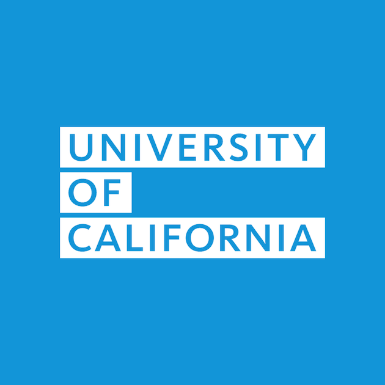

| What is the UC application? | What is the Common Applicatoin? |
|---|---|
| From all backgrounds, ethnicities and incomes, UC attracts the best and brightest. UC undergraduates come from all over California, and they work hard to make it to college. In fact, over 40 percent of UC students come from low-income families. UC's faculty are the drivers behind innovations in biotechnology, computer science, art and architecture — and they bring that knowledge, that greatness, directly to the classroom. Thousands of California jobs, billions of dollars in revenues, and countless everyday household items — from more plentiful fruits and vegetables to compact fluorescent light bulbs — can be traced back to UC discoveries. Similarly, many of the state’s leading businesses are based on UC technology, founded by our faculty or led by UC graduates. | The Common Application (informally known as the Common App) is an undergraduate college admission application that applicants may use to apply to any of 731 member colleges and universities in 48 states and the District of Columbia, as well as in Canada, China, and many European countries.[1] Member colleges and universities that accept the Common App are made up of over 100 public universities, nine Historically Black Colleges and Universities, and over 250 institutions that do not require an application fee. It is managed by the staff of a not-for-profit membership association (The Common Application, Inc.) and governed by a 13-member volunteer Board of Directors drawn from the ranks of college admission deans and secondary school college guidance counselors. Its mission is to promote access, equity, and integrity in the college admission process, which includes subjective factors gleaned from essays and recommendations alongside more objective criteria such as class rank and standardized testing. |